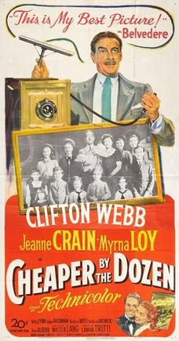

Cheaper by the Dozen
Starring: Clifton Webb, Myrna Loy, Jeanne Crain
Director: Walter Lang
Writer: Lamar Trotti
Producer: Lamar Trotti
Cheaper by the Dozen is a 1950 American comedy film based upon the autobiographical book Cheaper by the Dozen (1948) by Frank Bunker Gilbreth Jr. and Ernestine Gilbreth Carey. The film and book describe life in a family with twelve children in Montclair, New Jersey. The story of the Gilbreth family is continued in the book Belles on Their Toes, which was adapted as a film in 1952, with some of the original cast.
Trivia
- Based on Cheaper by the Dozen (biographical novel written by Frank Bunker Gilbreth, Jr. and Ernestine Gilbreth Carey).
- Twentieth Century-Fox head Darryl F. Zanuck paid a six-figure amount for the film rights for the story in early 1949.
- Eighteen child actors were involved in the production, and their mandatory daily school sessions on the set added $200,000 to the film's budget.
- The birth order in which Cheaper by the Dozen portrays some of the children is not the same order in which the real Gilbreth children were born.
Previous Showings
4 Runs • 1 Festival
Original Billings: 1 run (May 28, 1950)
Original Run: May 28, 1950 (Sunday - Tuesday)
All runs on record (4):
- May 28, 1950 (Sunday - Tuesday)Clifton Webb, Myrna Loy
- March 9 - 11, 1991w/ Belles on Their Toes
- August 14, 1997w/ The Enchanted Cottage
- July 22 - 23, 2004Summer 2004: Sixty-one Classic Movies, including 10 with Ronald Reagan and 9 Silw/ Belles on Their Toes